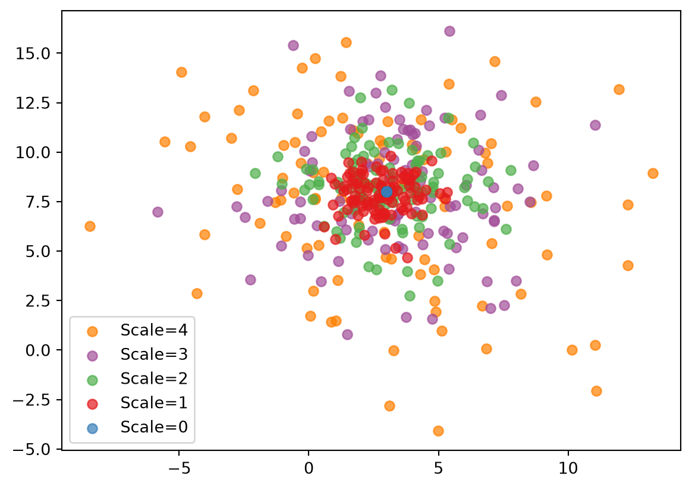

import multiprocessing as mp
# Define a function
def my_func(x):
return x**2
# Run it in parallel
with mp.Pool() as pool:
results = pool.map(my_func, [1,2,3])
print(results)[1, 4, 9]If you’re one of those people whose scripts always run in a second or less, you can probably skip this tutorial. But if you have time to make yourself a cup of tea while your code is running, you might want to read on. This tutorial covers how to run code in parallel, and how to check its performance to look for improvements.
Scary stories of Python’s “global interpreter lock” aside, parallelization is actually fairly simple in Python. However, it’s not particularly intuitive or flexible. We can do vanilla parallelization in Python via something like this:
[1, 4, 9]So far so good. But what if we have something more complicated? What if we want to run our function with a different keyword argument, for example? It starts getting kind of crazy:
from functools import partial
# Define a (slightly) more complex function
def complex_func(x, arg1=2, arg2=4):
return x**2 + (arg1 * arg2)
# Make a new function with a different default argument 😱
new_func = partial(complex_func, arg2=10)
# Run it in parallel
with mp.Pool() as pool:
results = pool.map(new_func, [1,2,3])
print(results)[21, 24, 29]This works, but that sure was a lot of work just to set a single keyword argument!
With Sciris, you can do it all with one line:
[21, 24, 29]What’s happening here? sc.parallelize() lets you pass keyword arguments directly to the function you’re calling. You can also iterate over multiple arguments rather than just one:
[21, 44, 69](Of course you can do this with vanilla Python too, but you’ll need to define a list of tuples, and you can only assign by position, not by keyword.)
Depending on what you might want to run, your inputs might be in one of several different forms. You can supply a list of values, a list of dicts, or a dict of lists. An example will probably help:
r1 = [2, 6, 12]
r2 = [2, 6, 12]
r3 = [2, 6, 12]All of these are equivalent: choose whichever makes you happy.
There are lots and lots of options with parallelization, but we’ll only cover a couple here. For example, if you want to start 200 jobs on your laptop with 8 cores, you probably don’t want them to eat up all your CPU or memory and make your computer unusable. You can set maxcpu and maxmem limits to handle that:
import numpy as np
import matplotlib.pyplot as plt
# Define the function
def rand2d(i, x, y):
np.random.seed()
xy = [x+i*np.random.randn(100), y+i*np.random.randn(100)]
return (i,xy)
# Run in parallel
xy = sc.parallelize(
func = rand2d, # The function to parallelize
iterarg = range(5), # Values for first argument
maxcpu = 0.8, # CPU limit (1 = no limit)
maxmem = 0.9, # Memory limit (1 = no limit)
interval = 0.2, # How often to re-check the limits (in seconds)
x = 3, y = 8, # Keyword arguments for the function
)
# Plot
plt.figure()
colors = sc.gridcolors(len(xy))
for i,(x,y) in reversed(xy): # Reverse order to plot the most widely spaced dots first
plt.scatter(x, y, c=[colors[i]], alpha=0.7, label=f'Scale={i}')
plt.legend();
So far, we’ve used sc.parallelize() as a function. But you can also use it as a class, which gives you more flexibility and control over which jobs are run, and will give you more information if any of them failed:
def slow_func(i=1):
sc.randsleep(seed=i)
if i == 4:
raise Exception("I don't like seed 4")
return i**2
# Create the parallelizer object
P = sc.Parallel(
func = slow_func,
iterarg = range(10),
parallelizer = 'multiprocess-async', # Run asynchronously
die = False, # Keep going if a job crashes
)
# Actually run
P.run_async()
# Monitor progress
P.monitor()
# Get results
P.finalize()
# See how long things took
print(P.times)
Job 0/10 (0.0 s) —————————————————————————————— 0%
Job 0/10 (0.1 s) —————————————————————————————— 0%
Job 1/10 (0.2 s) •••——————————————————————————— 10%
Job 1/10 (0.3 s) •••——————————————————————————— 10%
Job 1/10 (0.4 s) •••——————————————————————————— 10%
Job 1/10 (0.5 s) •••——————————————————————————— 10%
Job 2/10 (0.6 s) ••••••———————————————————————— 20%
Job 2/10 (0.7 s) ••••••———————————————————————— 20%
Job 2/10 (0.8 s) ••••••———————————————————————— 20%
Job 2/10 (0.9 s) ••••••———————————————————————— 20%
Job 2/10 (1.0 s) ••••••———————————————————————— 20%
Job 3/10 (1.1 s) •••••••••————————————————————— 30%
Job 3/10 (1.2 s) •••••••••————————————————————— 30%
Job 4/10 (1.3 s) ••••••••••••—————————————————— 40%
Job 4/10 (1.4 s) ••••••••••••—————————————————— 40%
Job 4/10 (1.5 s) ••••••••••••—————————————————— 40%
Job 4/10 (1.6 s) ••••••••••••—————————————————— 40%
Job 4/10 (1.7 s) ••••••••••••—————————————————— 40%
Job 4/10 (1.8 s) ••••••••••••—————————————————— 40%/opt/hostedtoolcache/Python/3.13.14/x64/lib/python3.13/site-packages/multiprocess/pool.py:48: RuntimeWarning: sc.parallelize(): Task 4 failed, but die=False so continuing.
Traceback (most recent call last):
File "/home/runner/work/sciris/sciris/sciris/sc_parallel.py", line 900, in _task
result = func(*args, **kwargs) # Call the function!
File "/tmp/ipykernel_2752/2785706684.py", line 4, in slow_func
raise Exception("I don't like seed 4")
Exception: I don't like seed 4
return list(map(*args))
Job 4/10 (1.9 s) ••••••••••••—————————————————— 40%
Job 4/10 (2.0 s) ••••••••••••—————————————————— 40%
Job 6/10 (2.1 s) ••••••••••••••••••———————————— 60%
Job 7/10 (2.2 s) •••••••••••••••••••••————————— 70%
Job 7/10 (2.3 s) •••••••••••••••••••••————————— 70%
Job 7/10 (2.4 s) •••••••••••••••••••••————————— 70%
Job 7/10 (2.5 s) •••••••••••••••••••••————————— 70%
Job 8/10 (2.6 s) ••••••••••••••••••••••••—————— 80%
Job 8/10 (2.7 s) ••••••••••••••••••••••••—————— 80%
Job 9/10 (2.8 s) •••••••••••••••••••••••••••——— 90%
Job 9/10 (2.9 s) •••••••••••••••••••••••••••——— 90%
Job 9/10 (3.0 s) •••••••••••••••••••••••••••——— 90%
Job 9/10 (3.1 s) •••••••••••••••••••••••••••——— 90%
Job 9/10 (3.2 s) •••••••••••••••••••••••••••——— 90%
Job 9/10 (3.3 s) •••••••••••••••••••••••••••——— 90%
Job 9/10 (3.4 s) •••••••••••••••••••••••••••——— 90%
Job 9/10 (3.5 s) •••••••••••••••••••••••••••——— 90%
Job 9/10 (3.6 s) •••••••••••••••••••••••••••——— 90%
Job 9/10 (3.7 s) •••••••••••••••••••••••••••——— 90%
Job 9/10 (3.8 s) •••••••••••••••••••••••••••——— 90%
Job 10/10 (3.9 s) •••••••••••••••••••••••••••••• 100%
#0. 'started': datetime.datetime(2026, 8, 10, 2, 36, 58, 542627)
#1. 'finished': datetime.datetime(2026, 8, 10, 2, 37, 2, 400447)
#2. 'elapsed': 3.85782
#3. 'jobs': [1.2776598930358887, 1.0267844200134277, 0.526130199432373,
0.17510032653808594, 1.8910133838653564, 1.610948085784912, 1.077317714691162,
1.2511587142944336, 0.6545529365539551, 1.7415025234222412]/home/runner/work/sciris/sciris/sciris/sc_parallel.py:584: RuntimeWarning: Only 9 of 10 jobs succeeded; see exceptions attribute for details
self.process_results()You can see it raised some warnings. These are stored in the Parallel object so we can check back and see what happened:
P.success = [True, True, True, True, False, True, True, True, True, True]
P.exceptions = [None, None, None, None, Exception("I don't like seed 4"), None, None, None, None, None]
P.results = [0, 1, 4, 9, None, 25, 36, 49, 64, 81]Hopefully, you will never need to run a function as poorly written as slow_func()!
Even parallelization can’t save you if your code is just really slow. Sciris provides a variety of tools to help with this.
First off, we can check if our computer is performing as we expect, or if we want to compare across computers:
CPU performance: {'python': 13.563410979724267, 'numpy': 233.98598082614382}
System memory load 0.098
Python RAM usage 161.81 MBWe can see that NumPy performance is much higher than Python – hundreds of MOPS† instead of single-digits. This makes sense, this is why we use it for array operations!
† The determination of a single “operation” is a little loose, so these “MOPS” can be used for relative purposes, but aren’t directly relatable to, say, published processor speeds.
If you want to do a serious profiling of your code, take a look at Austin. But if you just want to get a quick sense of where things might be slow, you can use sc.profile(). Applying it to our lousy slow_func() from before:
Profiling 1 function(s):
<function slow_func at 0x7f9609476660>
Elapsed time: 1.02 s
————————————————————————————————————————————————
Profile of 2785706684.py:1: 1.02408 s (99.9742%)
————————————————————————————————————————————————
Total time: 1.02408 s
File: /tmp/ipykernel_2752/2785706684.py
Function: slow_func at line 1
Line # Hits Time Per Hit % Time Line Contents
==============================================================
1 def slow_func(i=1):
2 1 1024073419.0 1.02e+09 100.0 sc.randsleep(seed=i)
3 1 1783.0 1783.0 0.0 if i == 4:
4 raise Exception("I don't like seed 4")
5 1 1733.0 1733.0 0.0 return i**2
<sciris.sc_profiling.profile at 0x7f960a5cbe00>
[<class 'sciris.sc_profiling.profile'>, <class 'sciris.sc_printing.prettyobj'>]
————————————————————————————————————————————————————————————————————————
Methods:
_get_entries() merge() run_func()
_parse() parse_follow() sort()
_path_to_name() plot() to_df()
disp() run()
————————————————————————————————————————————————————————————————————————
args: ()
df: name time percent function \
0 2785706684. [...]
exclude: None
follow: None
follow_funcs: [<function slow_func at 0x7f9609476660>]
include: None
kwargs: {}
output: #0. '2785706684.py:1':
#0. 'name': '2785706684.py:1'
#1 [...]
private: '__init__'
prof: <line_profiler.line_profiler.LineProfiler object at
0x7f96408fad00>
run_func: <function slow_func at 0x7f9609476660>
run_func_name: '2785706684.py:1'
skipzero: False
total: 1.0243446826934814
unwrap: True
verbose: True
————————————————————————————————————————————————————————————————————————We can see that 100% (well, 99.9997%) of the time was taken by the sleep function. This is not surprising, but seems correct!
For a slightly more realistic example:
Profiling 1 function(s):
<function func at 0x7f960a3c45e0>
Elapsed time: 72.1 ms
————————————————————————————————————————————————
Profile of 701805461.py:1: 0.0714086 s (98.816%)
————————————————————————————————————————————————
Total time: 0.0714086 s
File: /tmp/ipykernel_2752/701805461.py
Function: func at line 1
Line # Hits Time Per Hit % Time Line Contents
==============================================================
1 def func():
2 1 661.0 661.0 0.0 n = 1000
3
4 # Do some NumPy
5 1 5078675.0 5.08e+06 7.1 v1 = np.random.rand(n,n)
6 1 4825115.0 4.83e+06 6.8 v2 = np.random.rand(n,n)
7 1 1903475.0 1.9e+06 2.7 v3 = v1*v2
8
9 # Do some Python
10 1 891.0 891.0 0.0 means = []
11 1001 297501.0 297.2 0.4 for i in range(n):
12 1000 59302269.0 59302.3 83.0 means.append(sum(v3[i])/n)
<sciris.sc_profiling.profile at 0x7f9609492ad0>
[<class 'sciris.sc_profiling.profile'>, <class 'sciris.sc_printing.prettyobj'>]
————————————————————————————————————————————————————————————————————————
Methods:
_get_entries() merge() run_func()
_parse() parse_follow() sort()
_path_to_name() plot() to_df()
disp() run()
————————————————————————————————————————————————————————————————————————
args: ()
df: name time percent function \
0 701805461.py: [...]
exclude: None
follow: None
follow_funcs: [<function func at 0x7f960a3c45e0>]
include: None
kwargs: {}
output: #0. '701805461.py:1':
#0. 'name': '701805461.py:1'
#1. [...]
private: '__init__'
prof: <line_profiler.line_profiler.LineProfiler object at
0x7f960a3d8c80>
run_func: <function func at 0x7f960a3c45e0>
run_func_name: '701805461.py:1'
skipzero: False
total: 0.07226419448852539
unwrap: True
verbose: True
————————————————————————————————————————————————————————————————————————We can see (from the “% Time” column) that, again not surprisingly, the Python math operation is much slower than the NumPy operations.